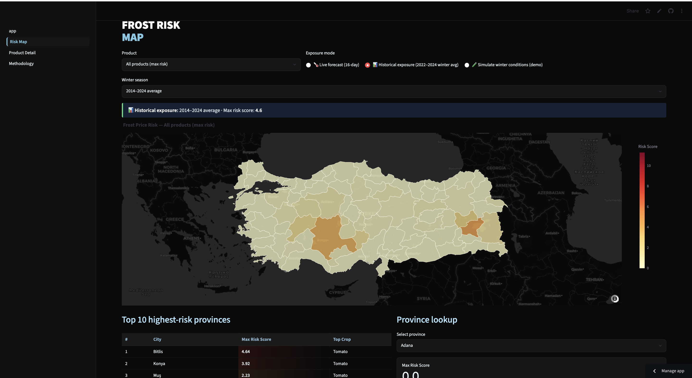
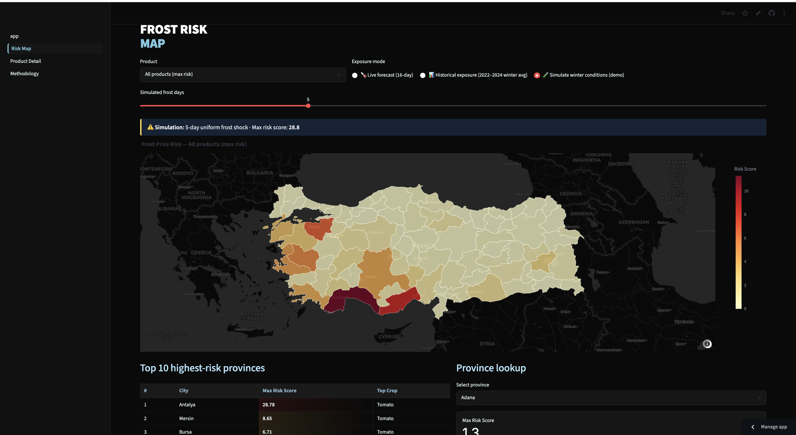

FrostAlert is an interactive dashboard that lets users explore frost risk for Turkish agricultural provinces using a combination of historical climate data and short-term forecasts. It was built as an applied prototype for the Data Science for the Sustainable Development Goals (DS4SDG) program, with the goal of turning agricultural climate monitoring into something a non-technical user can interact with directly.

Historical exposure mode: 2014–2024 winter average frost risk across Turkish provinces.

Interactive simulation: the effect of a 5-day uniform frost shock, with risk recomputed by province.
End-to-end ownership of a small application: data pipeline, API integration, interactive frontend, and live deployment. The goal was less about producing new research findings and more about practicing the full delivery cycle of a working data product.